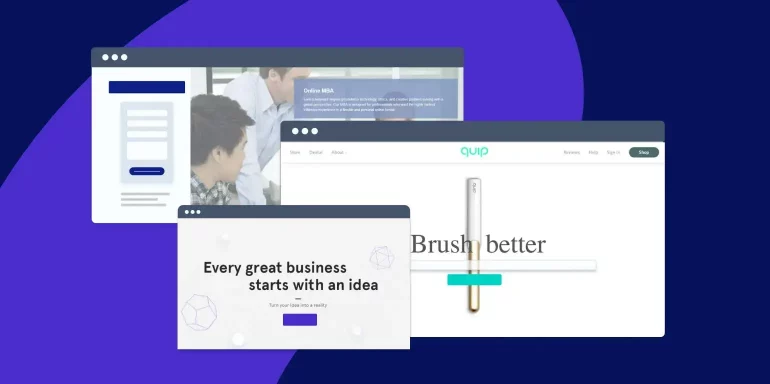

Identify your needs
The first step is to identify your organization's specific security needs. What assets do you need to protect? What are your biggest security risks? Once you know your needs, you can start to narrow down your options.
Security Intelligence
Consider your budget
Security tools can be expensive, so it is important to consider your budget before making a decision. There are a number of affordable security tools on the market, so you should be able to find one that fits your budget.
Read reviews
Once you have a few security tools in mind, it is a good idea to read reviews from other users. This will give you a good idea of how well the tools work and whether they are a good fit for your organization.
MIT Technology Review
Get a free trial
Many security tools offer free trials. This is a great way to try out the tools before you buy them. This will give you a chance to see how the tools work and whether they meet your needs.
Instapage
Talk to an expert
If you are still not sure which security tools are right for your organization, it is a good idea to talk to an expert. A security consultant can help you assess your needs and recommend the best tools for your organization.
The Chicago School of Professional Psychology
Popular security tools
Here are some of the most popular security tools:
- Antivirus software is a must-have for any organization. Antivirus software can help to protect your computer from viruses, malware, and other threats.

Spiceworks
- Firewall software can help to protect your network from unauthorized access. Firewall software can block incoming traffic from certain IP addresses or ports.

Dummies.com
- Intrusion detection systems (IDS) can help to detect malicious activity on your network. IDS can alert you to potential threats so that you can take action to mitigate them.

Comparitech
- Intrusion prevention systems (IPS) can help to prevent malicious activity from reaching your network. IPS can block incoming traffic that is known to be malicious.

Wallarm
- Data loss prevention (DLP) software can help to protect your sensitive data from being leaked. DLP software can prevent users from sending sensitive data outside of your organization.

Clearswift
- Web filtering software can help to protect your users from malicious websites. Web filtering software can block access to websites that are known to contain malware or other threats.

FamiSafe - Wondershare
These are just a few of the many security tools that are available. The best security tools for your organization will depend on your specific needs.
Conclusion
Network security is a critical aspect of maintaining your data integrity and online privacy. By understanding its importance and implementing effective measures, you can protect yourself and your organization from cyber threats. Stay proactive, stay informed, and prioritize network security to ensure a safe and secure digital environment.